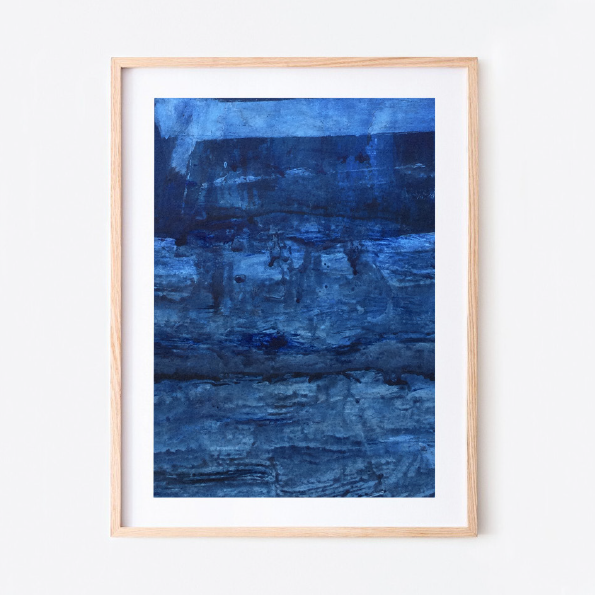

Hoofdstuk 1
Het endocannabinoïde systeem…
Het bijzondere van iets nieuws leren is dat iets wat eerst bijna magisch lijkt, vaak een stukje van zijn mysterie verliest. Maar bij deze ontdekking gebeurde het tegenovergestelde: ze maakte me alleen maar nieuwsgieriger. En ik bleef me afvragen: ‘Waarom weet bijna niemand dit? Stel je Schotland voor. Regen die zachtjes tegen de ramen slaat, mistflarden die over de heuvels kruipen, oude Keltische sagen die fluisteren over monsters in de diepte van de lochs. Een land dat uitnodigt tot verhalen over mythische wezens en ongeziene krachten. Hier, in dit landschap, zou je bijna verwachten dat de natuur zelf je iets onverklaarbaars schenkt. En inderdaad, enige tijd geleden werd er een bijzonder wezen ontdekt. Een wezen dat weggelopen leek uit een Marvel-superheldenfilm. Ze kan een bot breken en toch gewoon doorgaan met haar dag. Wanneer ze haar handen onderdompelt in ijskoud water, blijft haar gezicht rustig, zonder huivering of kramp. Als ze haar huid per ongeluk aanraakt met een gloeiendhete strijkbout, merkt ze het pas wanneer ze de geur van verschroeide huid ruikt, niet door pijn. En als iemand haar een chilipeper van het heetste soort aanbiedt — een hap waar jij en ik nauwelijks van zouden herstellen — neemt zij er een flinke beet van en zegt kalm: “Een beetje warm gevoel.” Het klinkt ongeloofwaardig. Maar dit wezen bleek geen monster, geen superheld, geen figuur uit de verbeelding. Het was een vrouw. Een vriendelijke, bejaarde dame met een zachte glimlach. Haar naam: Jo Cameron.